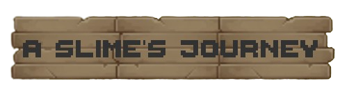
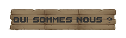
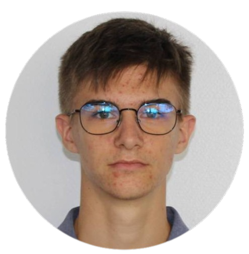
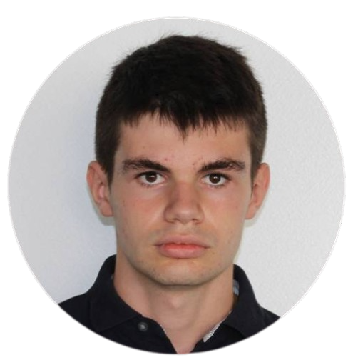
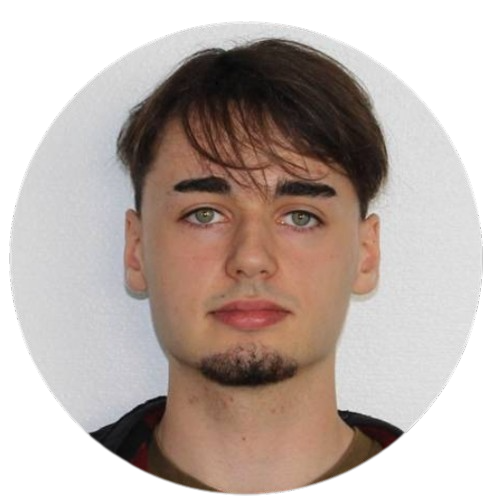
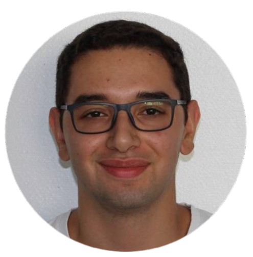

A Slime Journey's est un jeu de plateforme créer pour le projet S2 du groupe Arcln prod.
Ce jeu est actuellement en cours de developpement, et est développé sur le moteur Unity Engine.
Ce jeu nous permet d'incarner un slime parcourant un univers médiéval à la recherche du château de ce royaume, aussi beau que dangereux.
A travers son voyage, notre personnage fera face à de nombreux dangers, allant de simples sangliers à des monstres aussi impressionants que dangereux.
Le slime apprendra aussi différentes capacités au fur et à mesure des niveaux, qu'il pourra ensuite réutiliser plus tard, tel qu'un double saut, la capacité à sauter depuis un mur ou encore des attaques uniques.
Durant son épopée, le joueur parcourra de nombreux décors très variés d'un style médieval pour une meilleure immersion.
Lors du premier niveau, le joueur se retrouve à la merci d'une fôret aggressive, il devra surmonter ses dangers afin de passer au niveau suivant, qui sera un peu plus proche
de son but final, le château. En effet, chaque niveau possède ses propres décors, de plus en plus proche d'un château. Enfin, lors de certains niveaux clés, le joueur devra faire
face à de redoutables boss.
Afin de le soutenir, le joueurs pourra faire appel à un de ses amis et jouer en multijoueur en ligne afin de profiter du jeu avec un ami.
Télécharger le cahier des charges.
Télécharger le rapport de soutenance.
Télécharger A Slime's Journey


Je suis Maxime Douillard, je suis chargé
du développement du jeu, ainsi que d'une
partie de la communication.

Je suis Alexis Le-Gall, je m'occupe
de la création de niveau et de la
communication.

Je suis Enzo Juhel, je suis chargé
du développement du jeu. Je suis
également le chef de projet.

Je suis Omid Sheibanifar, je suis chargé de
la direction artistique du jeu. Je participe
également au développement du jeu.